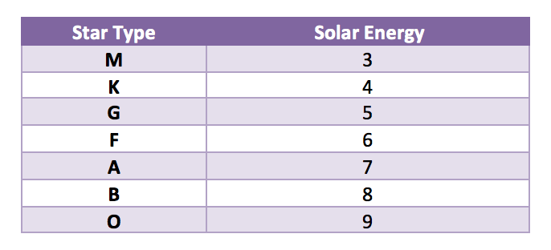

Problem made by Lockheed Martin, is CodeQuest 2017 Problem 16
This problem has a difficulty of 95
Input File: Prob16.in.txt
Output: Your output needs to be directed to stdout (i.e., using System.out.println())
An exciting new planet in another planetary system has been discovered by the Kepler telescope. Scientists want to launch a satellite to this new planet and have asked you to write a program to plot a course that will require the least amount of time to get there. They believe the satellite can escape our solar system leaving with the speed of over about 17Km/s and thus taking around 20,000 years to travel a light year. The satellite has a solar chargeable battery that can hold a maximum 20 units of energy to power its instruments and thrusters. The satellite consumes 1 unit of energy every light year it travels. The idea is to hop from star to star consuming energy until the destination is reached without draining the entire battery.
Here are the guidelines for your journey:
• In order to simplify your distance calculations, you break space up into a series of cubes, each with a volume of one cubic lightyear. This means that it will take one unit of energy to travel from the center of one cube to the center of any adjacent cube.
• Diagonal movements are not allowed. You have carefully managed the orientation of the space cubes such that movements along the x, y, and z axes will avoid collisions with stars and black holes.
• You start your journey in the origin cube (0, 0, 0). Your destination is in cube (N-1, N-1, N-1).
• The battery can only hold a maximum of 20 units of energy, and you start with a full battery.
• The battery can be briefly charged by flying through a cube that contains a sun. The amount of energy units gained is based on the star type in the table below. Remember, 20 units is a fully charged battery. Any excess solar energy is lost.

• If you approach a cube without a sun with the battery drained, then the mission fails. For example, if you have 1 energy unit left and then move to the cube below you and no star is there, then the mission fails; however, if you move above you with a G-type star, then you’ll end up with 5 units of energy in that cube with the star.
• You can’t return to a star you already flew by as this will affect your momentum.
The first line of the file Prob16.in.txt will contain a positive integer T denoting the number of test cases that follow. Each test case will have the following input:
• The first line of each test case will contain a positive integer L denoting the width, length, and depth of the star map you created in lightyears. For example, if L is 2, then space is broken into 8 cubes (2x2x2).
• The second line of each test case will contain a positive integer N denoting the number of stars available for you to harness on your journey.
• The next N lines will each contain the star-type and the x,y,z coordinates of the space cube containing that star all separated by commas.
2
10
4
M,1,2,1
G,3,4,1
M,1,8,3
F,2,2,3
12
12
M,2,10,7
B,8,1,2
B,1,7,5
A,9,2,9
B,3,9,2
A,7,2,5
A,3,7,5
O,2,6,5
O,6,8,4
M,1,7,2
B,10,3,3
B,7,9,3
Your program should display the shortest distance the satellite must travel to reach the destination in lightyears. From the example above, in one possible solution you travel to M(1,2,1) and lose 4 energy units, gain 3 energy units because it’s a M-type star, travel to F(2,2,3) and lose 3 energy units, gain 6 (only 4 are usable to fill your tank though), and then lose 20 to travel to the destination at (9,9,9). The total travel distance is 4+3+20=27 lightyears.
27
33